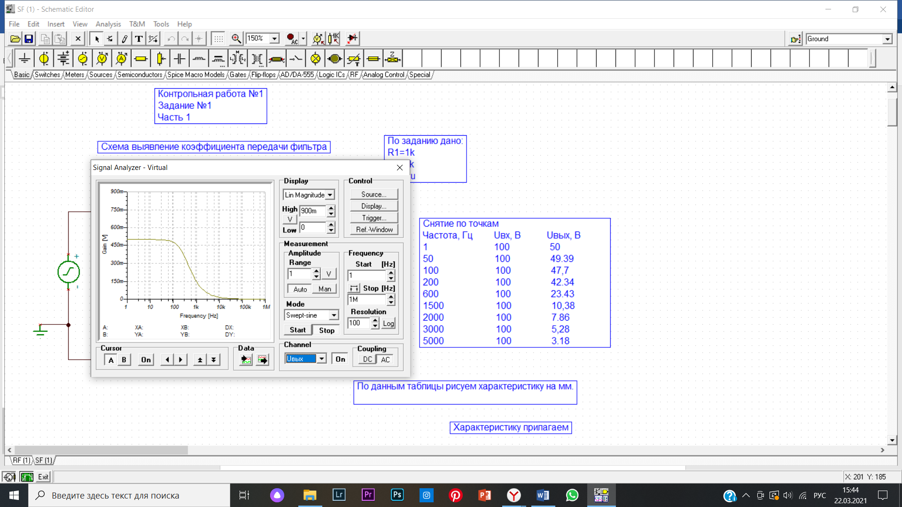

Решение задачи №1 (сглаживающий фильтр)
Для решения ПЕРВОЙ задачи ПЕРВОЙ части воспользуемся компьютерной моделью «TINA» и типовой схемой простого СГЛАЖИВАЮЩЕГО фильтра (рис.1) (см. раздел «Электрические фильтры»)

Рис. 1
Способ получения постоянного тока из переменного синусоидального (идеализированный вид) при использовании одно или двух полупериодного выпрямителя имеет ряд недостатков. Главным недостатком такого выпрямителя является пульсирующее напряжение. Избавление от пульсаций напряжения, их сглаживание – необходимое условие для корректной работы многих электрических приборов, особенно это касается радиоаппаратуры, где такой вид напряжения вносит хорошо заметные помехи. Так называемые, сглаживающие фильтры применяют для устранения пульсаций выходного тока и напряжения. Принцип работы сглаживающих фильтров основывается на свойствах конденсатора и катушки индуктивности. Они выполняют роль резервуара энергии. Как известно, напряжение на конденсаторе не может измениться мгновенно, а на индуктивности ток не может мгновенно возрасти или исчезнуть. Первым делом мы построили схему. Поддерживая постоянной амплитуду входной косинусоиды в поле «Amplitude» - 100В, мы меняем значения частоты от 1Гц до 5000Гц в поле «Frequency» (рис.2) и снимаем показания Вольтметра Uвых.

Рис. 2
Строим зависимость Uвых от частоты по точкам на миллиметровке (характеристику прилагаем) и в программе Excel (рис.3).

Рис. 3
Снимаем ту же зависимость с помощью прибора в «TINA» - Signal Analyzer (рис.4)

Рис. 4
Итак, мы решили ПЕРВУЮ задачу ПЕРВОЙ части– построили модель простейшего СГЛАЖИВАЮЩЕГО фильтра (рис.5)

Рис. 5